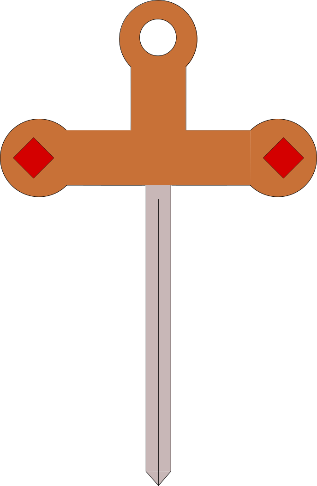
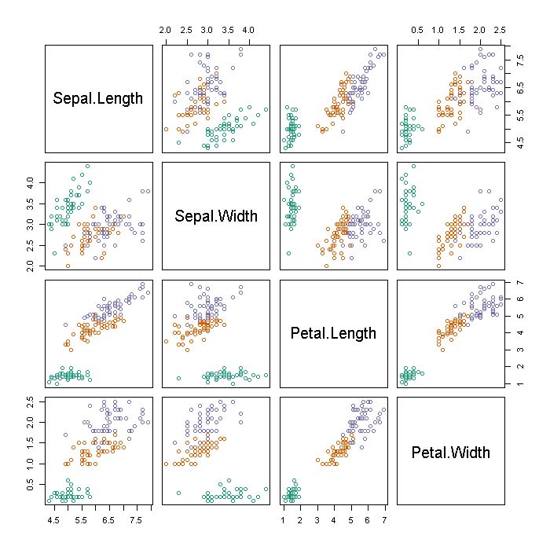

Visualização de Dados 2016.2 Lista de Exercícios 1
Informações Gerais
Os três primeiros exercícios desta lista são obrigatórios (todos alunos devem fazer). Os problemas remanescentes só são obrigatórios para alunos de pós-graduação. Não serão dados pontos extras, mas alunos de graduação que tentarem fazer os problemas não obrigatórios receberam feedback neles também. É recomendada a leitura dos capítulos 3 e 5 do livro Interactive Data Visualization for the Web e também o uso da documentação da Mozilla Developer Network.
Data de Entrega
A entrega deverá ser feita via GitHub até 26/08/2016 até 23:59. Veja as instruções para entrega
aqui.
Problema 1 (Para todos os alunos)
Para a solução deste problema, crie um arquivo
problema1.html e outro chamado
problema1.js. Como arquivo de teste, usaremos o famoso
Iris dataset. Para ter acesso a ele, inclua a sequinte linha no elemento head to seu arquivo html
<script src="http://www.cin.ufpe.br/~nivan/teaching/data_vis/fall_2016/material/iris.js"></script>
Javascript contém várias funções que bastante úteis para o processamento de arrays. Leia a documentação das funcões
map,
reduce e
filter. Crie um arquivo chamado
problema1.js e nele implemente o pedido em cada um dos itens abaixo (sem utilizar loops):
- Uma função chamada getMinimum que dado o nome da coluna (e.g., "Sepal.Length") e uma espécie (e.g. "setosa") retorna o menor valor da coluna para a espécie dada.
- Uma função chamada getAverage que dado o nome da coluna (e.g., "Sepal.Length") e uma lista espécies (e.g. ["versicolor","virginica"]) retorna a média da coluna para inidvíduos das espécies listadas.
- Uma função chamada getMaximumNotIn que dado o nome da coluna (e.g., "Sepal.Length") e uma lista espécies (e.g. ["versicolor","virginica"]) retorna o maior valor da coluna para inidvíduos de espécies não listadas.
Problema 2 (Para todos os alunos)
Crie um arquivo chamado problema2.html. Neste arquivo crive um elemento svg que replica a seguinte figura (note que não é necessário obter uma figura exatamente igual):

Problema 3 (Para todos os alunos)
O nosso objetivo é criar uma função que gera
gráficos de dispersão (
scatter plots). Para este problema usaremos novamente o Iris dataset do problema 1. A meta é criar uma função chamada
scatterplot que recebe 2 parâmetros: duas colunas do dataset (e.g.,"Petal.Length","Petal.Width") e cria o gráfico de dispersão correspondente em um elemento svg previamente criado na página. No gráfico gerado, os pontos devem ser coloridos de acordo com a espécie do ponto respectivo. Além disso, os gráfico deve conter eixos e texto indicando a coordenada representada pelo eixo bem como os limites dos dados naquele eixo. Você deve usar D3 para a resolução deste exercício que deve ser implementada em um arquivo chamado
problema3.js e exibido em
problema3.html. Um exemplo de do resultado desta função é a seguinte figura

Problema 4 (Obrigatório apenas para alunos de pós-graduação)
O nosso objetivo é criar uma função que gera matrizes de dispersão (
scatter plot matrix).
Estas são matrizes de gráficos de dispersão, nas quais cada linha e coluna corresponde à uma dimensão do conjunto de dados. Por exemplo, veja a seguinte imagem

A meta é criar uma função chamada
scatterplotMatrix que recebe como paremetro um array contendo as colunas que deverão ser visualizadas (e.g.,["Petal.Length","Petal.Width"]) e gera a matriz de dispersão correspondente.
A visualização deverá ser gerada em único elemento svg usando D3. Cada gráfico da matriz deve serguir as especificações do problema 3 (isto é, pontos coloridos de acordo com as espécies e apresentar o limite de cada eixo). As células da identidade deverão conter um texto indicando a coordenada correspondente.